Справка по ESA Control
Здесь простыми словами написано, как работает программа: откуда берутся задачи, как собирается смета, кто какие компании видит и что проверяет автоаудит. Без технических подробностей, только про то, что вы видите на экране.
Читать подряд не нужно. Разделы названы так же, как пункты меню: открывайте тот, в котором сейчас работаете. В конце разделов собраны частые вопросы. Загляните туда, если что-то повело себя неожиданно.
Администрирование
Значок книги 📖 в шапке программы открывает эту справку сразу на разделе, в котором вы работаете. Если вопрос срочный, нажмите «?» в шапке и «Написать в техподдержку».
Вход и роли
Этот раздел про то, кто входит в программу и что видит каждый. Если сотрудник не видит какую-то компанию, ответ почти всегда здесь.
Как войти
Логин и пароль выдаёт руководитель фирмы. Логин пишется латиницей, от 3 до 20 знаков. Пароль не короче 6 знаков.
- После входа программа помнит вас на этом устройстве 30 дней. Кнопка «Выйти» в меню профиля (кружок с буквой в шапке) завершает вход.
- Пять неверных паролей подряд закрывают вход на 10 минут. Это защита от подбора пароля.
- Свой пароль можно сменить в меню профиля: «Сменить пароль». Руководитель может задать сотруднику новый пароль в разделе «Сотрудники», кнопка «Пароль».
Роли
| Роль | Что видит | Что может |
|---|---|---|
| Руководитель (владелец фирмы) | Всех клиентов, все задачи, всех сотрудников, автоаудит, журнал, настройки | Всё: заводит сотрудников и клиентов, собирает сметы, принимает работу, настраивает каталог и сейф паролей |
| Главбух | Клиентов, где он назначен главбухом, и все задачи по ним, кто бы их ни делал | Ведёт свои задачи и принимает работу бухгалтеров по своим клиентам |
| Бухгалтер | Свои задачи и клиентов, по которым у него есть задачи | Запускает таймер, отмечает подпункты, пишет заметку, прикладывает документы и сдаёт работу на проверку |
| Юрисконсульт | Как бухгалтер: свои задачи и их клиентов | Работает с правами бухгалтера. Ему можно поручать договоры и юридические задачи |
| Проверяющий | Всех клиентов, все задачи, документы и сотрудников фирмы | Только смотрит. Менять может лишь задачи, назначенные ему самому. Задачи не создаёт и не удаляет, клиентов и настройки не трогает |
Что сотрудник видит после входа
У сотрудника своё короткое меню: «Мой кабинет», «БухЗадачник», «Чеклист» и «Мои клиенты». Руководитель может скрыть часть этих разделов в карточке сотрудника, блок «Доступ к разделам».
Разделы «Клиенты», «БухСмета», «Сотрудники», «Автоаудит», «Аудит качества», «Журнал» и «Настройки» есть только у руководителя.
Шапка программы
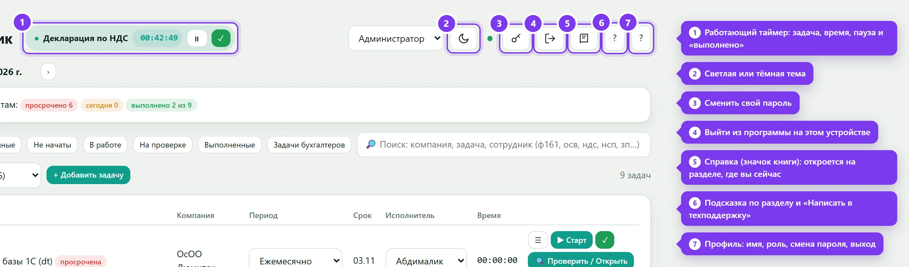
- Работающий таймер. Видно, какая задача идёт и сколько времени набежало. Кнопка паузы и галочка «выполнено» работают с любой страницы.
- Тема. Светлая или тёмная, запоминается на этом устройстве.
- Ключ. Сменить свой пароль.
- Выход. Завершает вход на этом устройстве.
- Книга — справка. Открывает эту справку сразу на разделе, в котором вы работаете.
- «?» Короткая подсказка по текущему разделу, «Открыть справку» и «Написать в техподдержку».
- Профиль. Кружок с первой буквой имени: имя, роль, смена пароля, выход.
Работа без интернета
Программа держит данные в браузере и отправляет изменения на сервер через несколько секунд. Если связь пропала, работа продолжается, а изменения уйдут, как только интернет вернётся. Состояние связи видно в шапке.
Если закрыть вкладку, пока изменения ещё не отправлены, браузер переспросит. Лучше дождаться отправки.
Частые вопросы
- Сотрудник не видит клиента.
- Главбух видит клиента, только если назначен главбухом в его карточке. Бухгалтер видит клиента, только если у него есть хотя бы одна задача по нему. Проверьте карточку клиента, раздел «Договор и обслуживание», и исполнителей в смете.
- Написало «Сессия истекла».
- Прошло 30 дней или руководитель сменил пароль либо отключил вход. Войдите заново.
- Изменение пропало после обновления страницы.
- Значит, сервер его не принял: у роли нет на это прав. Программа покажет причину всплывающим сообщением и вернёт данные с сервера.
Сотрудники
Раздел про людей фирмы: как завести человека, дать ему вход, что значат роли и как уволить так, чтобы работа не потерялась.
Экран «Сотрудники»
Одна карточка это один человек. В заголовке роль и есть ли у него вход. Ниже две полоски: «Загрузка» (сколько открытых задач) и «Выполнение» (какая доля его задач сделана). Сверху поиск по ФИО, телефону, email и логину.
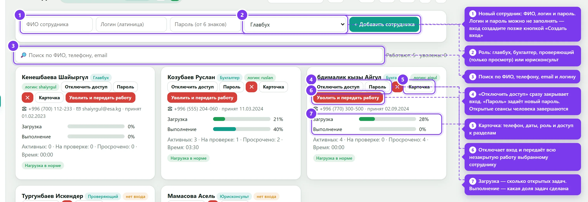
- Новый сотрудник. ФИО, логин и пароль, кнопка «+ Добавить сотрудника». Логин и пароль можно не заполнять: вход создадите позже кнопкой «Создать вход».
- Роль. Главбух, бухгалтер, проверяющий (только просмотр) или юрисконсульт.
- Поиск по ФИО, телефону, email и логину. Справа — сколько работают и сколько уволены.
- «Отключить доступ» и «Пароль». Первое сразу закрывает вход, второе задаёт новый пароль. Открытые сеансы человека завершаются в обоих случаях.
- Карточка сотрудника: номер, телефон, email, даты, роль, доступ к разделам.
- «Уволить и передать работу». Сначала отключает вход, потом передаёт выбранному сотруднику незакрытые задачи и клиентов.
- Загрузка и выполнение. Загрузка — сколько у человека открытых задач. Выполнение — какая доля его задач сделана.
Заводим сотрудника
- Вверху впишите ФИО и выберите роль: главбух, бухгалтер, проверяющий или юрисконсульт.
- Если сразу нужен вход, заполните логин (латиница) и пароль (от 6 знаков). Можно оставить пустыми и создать вход позже кнопкой «Создать вход».
- Нажмите «+ Добавить сотрудника».
Логин и пароль программа никуда не отправляет. Передайте их человеку сами.
Карточка сотрудника
Кнопка «Карточка» открывает номер, телефон (+996), email, дату рождения, дату приёма и дату увольнения. Даты проверяются: сотруднику не меньше 14 лет, приём не раньше рождения, увольнение не раньше приёма. Номер сотрудника не может повторяться.
В карточке же задаются:
- Роль, пока у сотрудника нет входа. Главбуха нельзя перевести в другую роль, пока он записан главбухом у клиентов: сначала назначьте им другого.
- Доступ к разделам: галочки «Мой кабинет», «БухЗадачник», «Чеклист», «Мои клиенты». Снятая галочка убирает раздел из меню сотрудника. Хотя бы один раздел должен остаться.
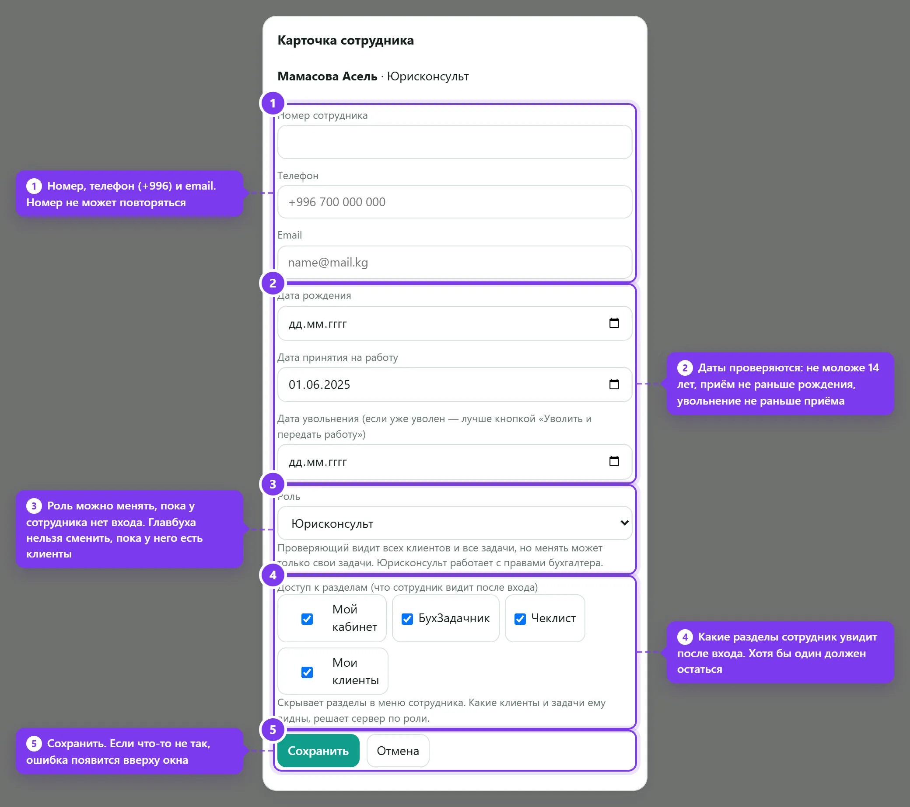
- Номер, телефон, email. Телефон пишется с кодом +996 или 9 цифрами. Номер сотрудника не может повторяться.
- Даты. Сотруднику не меньше 14 лет, приём не раньше рождения, увольнение не раньше приёма. Уволить сегодня или задним числом можно только кнопкой «Уволить и передать работу».
- Роль. Меняется, пока у сотрудника нет входа. Главбуха нельзя сменить, пока он записан главбухом у клиентов. Под списком — чем отличаются проверяющий и юрисконсульт.
- Доступ к разделам. Какие пункты меню сотрудник увидит после входа. Хотя бы один должен остаться.
- Сохранить. Если что-то введено неверно, ошибка появится вверху окна, а набранное не пропадёт.
Вход: отключить, пароль, пакет заданий
- Отключить доступ закрывает вход сразу: все открытые сеансы человека завершаются. «Включить доступ» возвращает.
- Пароль задаёт новый пароль. Старые сеансы при этом закрываются.
- Пакет заданий нужен только в офлайн-режиме без сервера. В обычной работе через интернет он не нужен.
Увольнение: «Уволить и передать работу»
Кнопка делает три вещи по порядку:
- отключает вход на сервере. Если связи нет, ничего не меняется, и программа попросит повторить;
- передаёт выбранному сотруднику все незакрытые задачи уволенного (таймер, если шёл, останавливается, время сохраняется);
- передаёт клиентов, где уволенный был исполнителем или главбухом. Если новый человек не главбух, главбухом клиента становится другой работающий главбух.
Выполненные задачи остаются в истории за тем, кто их сделал. В журнал записывается, сколько задач и клиентов передано.
Частые вопросы
- Не получается поменять роль.
- У сотрудника уже есть вход. Роль входа фиксируется при его создании. Удалите вход, поменяйте роль, создайте вход заново.
- Уволенный всё ещё в списке.
- Так и задумано: его история задач и время остаются. Он помечен «уволен» и не предлагается новым клиентам.
- Удалить или уволить?
- Почти всегда уволить. Удаление стирает человека из списков, а его задачи остаются без понятного исполнителя.
Клиенты
Раздел про клиентскую базу: что писать в карточке, зачем нужны характеристики и филиалы, как начинается и заканчивается обслуживание.
Список клиентов
Одна строка это один клиент: номер, название, ИНН, режим, тариф, главбух, исполнитель, статус. Сверху поиск: по названию (можно коротко), ИНН, исполнителю, режиму.
Фильтры: ответственный, статус, система налогообложения, форма собственности. Сортировка по названию, номеру или ответственному. «Сбросить всё» очищает отбор.
Карандаш ✎ открывает карточку. Кнопка «Добавить клиента» заводит нового. Добавить клиента можно, только когда в фирме есть хотя бы один главбух.
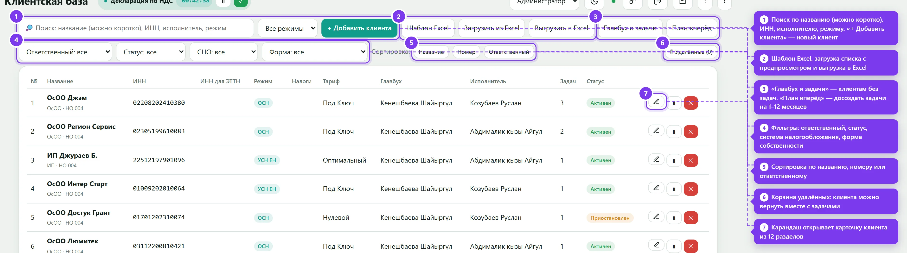
- Поиск и новый клиент. Поиск по названию (можно коротко), ИНН, исполнителю, режиму; рядом отбор по режиму и «+ Добавить клиента».
- Excel. Шаблон для заполнения, загрузка списка с предпросмотром и выгрузка всех клиентов.
- «Главбух и задачи» и «План вперёд». Первое назначает главбуха клиентам без задач и создаёт им ежемесячные задачи. Второе досоздаёт недостающие задачи на 1–12 месяцев вперёд.
- Фильтры: ответственный, статус, система налогообложения, форма собственности.
- Сортировка по названию, номеру или ответственному.
- Корзина удалённых. В скобках — сколько клиентов в корзине. Оттуда клиента можно вернуть вместе с задачами.
- Карандаш открывает карточку клиента из 12 разделов. Рядом — пауза (приостановить) и удаление.
Карточка клиента: 12 разделов
Каждый раздел правится отдельно: карандаш, правка, «Сохранить». Если закрыть карточку с несохранённой правкой, программа переспросит.
| Раздел | Что там |
|---|---|
| Основная информация | Форма собственности, название, ИНН (14 цифр), номер компании, ИНН руководителя, код налогового органа (61 код), вид деятельности, ИНН для ЭТТН |
| Статус и период обслуживания | Активен, приостановлен или завершён; дата начала и окончания |
| Налоговые данные | Система налогообложения, метод учёта доходов и расходов, категория налогоплательщика, тариф |
| Характеристики бизнеса и филиалы | 26 галочек (сотрудники, ККМ, маркетплейсы, импорт ЕАЭС и другие) и налоговые органы филиалов |
| Договор и обслуживание | Тип обслуживания, с кем договор, главбух, исполнитель, ссылки на договор и реквизиты |
| Доверенность | На кого выдана и до какого числа |
| ИТС (1С) | Подключение, способ, контактное лицо, путь к базе, логин и пароль |
| ЭЦП и Тундук ЕСИ | Пароль ЭЦП, срок её действия, логин и пароль ЕСИ |
| Интернет-банкинг | Банки с логинами и паролями, до 10 |
| Контакты и связанные лица | Телефоны, WhatsApp, Telegram, email; директор, учредители |
| Папка и доступы | Ссылка на папку клиента и свободный текст про доступы |
| Примечания | Заметка для своих |
Внизу карточки история задач клиента: открытые и выполненные, с исполнителем и документами. Кнопка «Смета» в шапке открывает смету этого клиента.
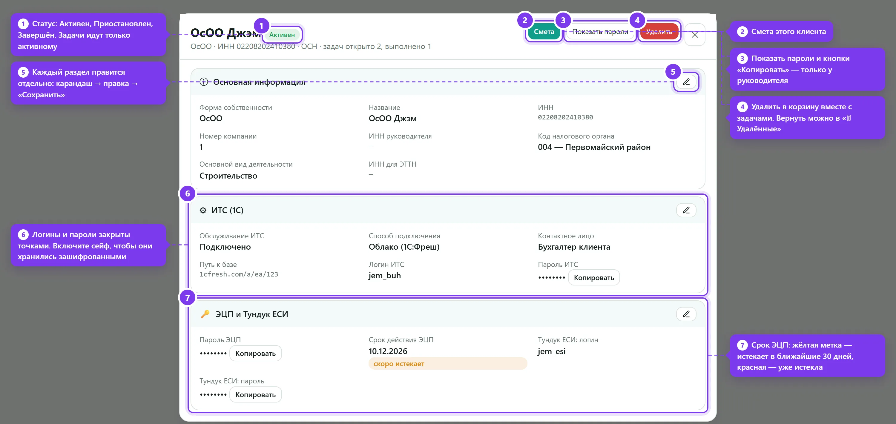
- Статус клиента: Активен, Приостановлен или Завершён. Новые задачи идут только активному.
- Смета этого клиента.
- «Показать пароли» и кнопки «Копировать» — только у руководителя.
- Удалить в корзину вместе с задачами. Вернуть можно в «🗑 Удалённые».
- Карандаш раздела. Каждый раздел правится отдельно: карандаш, правка, «Сохранить». Закрыть карточку с несохранённой правкой программа не даст без вопроса.
- Пароли закрыты точками. Логин виден руководителю. Включите сейф, чтобы пароли и в данных хранились зашифрованными.
- Срок ЭЦП. Жёлтая метка — истекает в ближайшие 30 дней, красная — уже истекла. Так же отмечается доверенность.
Проверки при вводе
- ИНН и ИНН руководителя это 14 цифр. Два клиента с одним ИНН или одним номером не допускаются.
- Для статуса «Завершён» нужна дата окончания. Если дата окончания уже прошла, а статус не «Завершён», программа попросит поправить.
- Без главбуха клиент не сохранится: без него он не попадёт в задачи и отчёты.
- «Нулевой клиент» нельзя совмещать с другими характеристиками.
- Ссылки должны начинаться с http:// или https://.
- Если ЭЦП или доверенность истекает в ближайшие 30 дней, рядом появляется жёлтая пометка, если истекла, красная.
Главбух и исполнитель
Главбух отвечает за клиента: видит его и все задачи по нему и принимает работу бухгалтеров. Исполнитель это тот, кому по умолчанию идут задачи из сметы.
Если поменять исполнителя, программа спросит, передать ли ему незакрытые задачи клиента. Задачи на проверке и вопросы автоаудита не передаются.
Пароли клиента
Пароли ИТС, ЭЦП, ЕСИ и банков на экране закрыты точками. Кнопки «Показать пароли» и «Копировать» есть только у руководителя. Чтобы пароли не лежали открытым текстом и в данных, включите сейф паролей.
Удаление и корзина
Удалённый клиент уходит в корзину «🗑 Удалённые» вместе со своими задачами. Оттуда его можно вернуть кнопкой «↩ Вернуть». Если за это время его ИНН или номер занял другой клиент, программа не вернёт его и скажет почему. «Удалить навсегда» стирает без возврата. В корзине хранятся последние 50 клиентов.
План вперёд и задачи сразу всем
Кнопки над списком клиентов:
- План вперёд: на сколько месяцев вперёд создавать задачи (от 1 до 12, по умолчанию 3). Программа досоздаст недостающие задачи по повторяющимся работам и не продублирует существующие.
- Главбух и задачи: клиентам без задач назначает выбранного главбуха (если его нет) и создаёт ежемесячные задачи, распределяя их между бухгалтерами.
- Выгрузить в Excel: список клиентов файлом.
Загрузка из Excel
Кнопка «Загрузить из Excel» (файлы .xlsx или .csv). Программа покажет предпросмотр: сколько строк, сколько повторов по ИНН и где есть замечания. Ничего не сохраняется, пока вы не подтвердите загрузку.
Частые вопросы
- Клиент есть, а задач по нему нет.
- Проверьте статус (у приостановленного и завершённого новых задач нет), исполнителя в разделе «Договор и обслуживание» и смету клиента.
- Поменял режим налогообложения, а задачи старые.
- Карточка сама задачи не меняет. Откройте смету: она пересоберёт подходящие работы по новому режиму. Сохраните её.
- Бухгалтер видит пароли?
- На экране нет. Но без сейфа пароли хранятся открытым текстом и приходят в данных всем, кому виден клиент. Включите сейф.
БухСмета
Смета отвечает на вопрос «что мы делаем для этого клиента и за сколько». Здесь разобрано, откуда в ней берутся работы, как считается сумма и как из строк получаются задачи.
Где открыть
Раздел «БухСмета» в меню или кнопка «Смета» в карточке клиента. Смета у клиента одна. Работать со сметами может только руководитель.
Откуда берутся строки
Смета не открывается пустой. Программа проходит по каталогу бизнес-процессов и для каждого процесса решает, нужен ли он клиенту:
- Режим налогообложения. Если у процесса отмечены режимы, а режима клиента среди них нет, процесс не предлагается («другой режим»). Процесс без отмеченных режимов подходит всем.
- Нулевой клиент. Если у клиента стоит «Нулевой клиент», предлагаются только налоги, отчёты и контроль. Учётная работа не нужна, движения нет.
- Характеристики. Если у процесса отмечены характеристики (например «Сотрудники» или «ККМ / Касса»), он предлагается только клиентам, у которых есть хотя бы одна из них. Такие строки подписаны «по условию: …».
- Разовые работы (периодичность «Разово», «По событию», «По запросу», категории «Разовая/заявка» и «Индивидуальная») сами не включаются. Их добавляют вручную.
Строки сгруппированы по сферам. Процесс, который клиенту обычно не нужен, тоже можно включить: рядом появится жёлтая пометка с причиной, например «другой режим».
Что можно настроить в строке
- Вкл/выкл. В смету попадают только включённые строки.
- Количество, если процесс считается по количеству (например, число сотрудников).
- Исполнитель. По умолчанию это исполнитель клиента, если его нет, главбух.
- Свой срок: другое число месяца для этого клиента.
- Подпункты: какие части работы входят. В задаче они станут чек-листом.
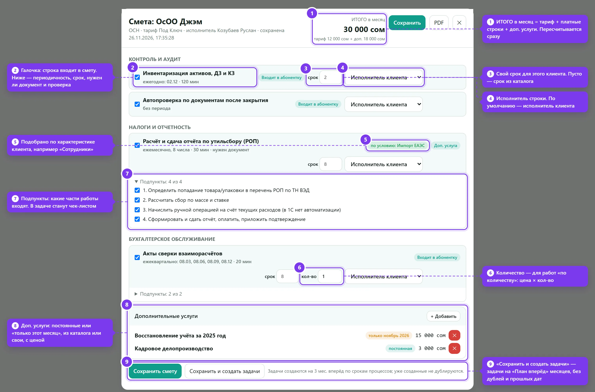
- ИТОГО в месяц = тариф + платные строки + доп. услуги. Пересчитывается сразу. Рядом — «Сохранить» и PDF.
- Галочка строки. Включённая строка входит в смету. Под названием — периодичность и срок, план в минутах, нужен ли документ и проверка. Метка справа — биллинг.
- Свой срок. Число месяца для этого клиента. Пусто — срок из каталога.
- Исполнитель строки. «Исполнитель клиента» — тот, кто указан в карточке клиента. Можно выбрать другого.
- «По условию: …» — процесс подобран по характеристике клиента, например «Импорт ЕАЭС» или «Сотрудники».
- Количество — для работ, которые считаются по количеству: цена × кол-во.
- Подпункты. Какие части работы входят. Снятые не попадут в задачу. В задаче включённые станут чек-листом.
- Дополнительные услуги. «+ Добавить» — из каталога или своя, с ценой. Метка «только ноябрь 2026» — разовая, «постоянная» — каждый месяц.
- Сохранение. «Сохранить смету» только запоминает. «Сохранить и создать задачи» ещё и создаёт задачи на «План вперёд» месяцев: без дублей и без прошлых дат.
Как считается сумма
| Биллинг процесса | Цена строки |
|---|---|
| Входит в абонентку | 0, работа внутри тарифа |
| Не тарифицируется | 0, контрольная работа |
| Считается по количеству | цена × количество |
| Доп. услуга | цена (× количество, если оно разрешено) |
Итог сметы = тариф клиента + платные строки + дополнительные услуги. Ноль в строке обычно не ошибка, а «входит в абонентку».
Дополнительные услуги
Внизу сметы можно добавить услугу из каталога или свою, с названием и ценой. У услуги два режима:
- Постоянная: входит в смету каждый месяц.
- Только этот месяц: разовая работа, на следующий месяц не переходит.
Задачи из сметы
Кнопка «Сохранить и создать задачи» создаёт задачи на столько месяцев вперёд, сколько задано в «План вперёд» на странице «Клиенты» (по умолчанию 3, можно от 1 до 12). Правила:
- срок задачи берётся из периодичности и месяцев сдачи процесса либо из своего срока строки;
- задачи на прошедшие даты не создаются;
- уже созданные задачи не дублируются, кнопку можно нажимать сколько угодно раз;
- в задачу переносятся подпункты, «нужен документ» и «с проверкой».
Если выключить процесс в смете, программа предложит убрать его будущие не начатые задачи. Начатые и выполненные остаются.
Кнопка «Создать задачи по всем сметам» делает то же сразу для всех клиентов.
Смету можно распечатать или сохранить в PDF. В шапку попадают реквизиты из «Настройки → Профиль компании». Пока профиль пуст, смета печатается без них.
Частые вопросы
- Программа предложила меньше процессов, чем я ждал.
- Проверьте режим налогообложения и характеристики в карточке клиента. Чаще всего у клиента не отмечена характеристика, а у процесса она стоит условием.
- Сохранил смету, а задач нет.
- Простое «Сохранить смету» задачи не создаёт. Нажмите «Сохранить и создать задачи». Ещё проверьте, есть ли у строк исполнитель и не приостановлен ли клиент.
- Изменил процесс в каталоге, у клиентов ничего не поменялось.
- Каталог влияет на то, что предлагается при открытии сметы. Уже созданные задачи остаются как были.
БухЗадачник
Экран, где сотрудник видит свои задачи и ведёт их до сдачи, а руководитель и главбух принимают работу.
Список задач
Сверху сводка: сколько просрочено и сколько на сегодня. Месяц выбирается стрелками. Фильтры: все, просроченные, на проверке, по клиенту; поиск по задаче и клиенту.
Значки в строке: ☑ подпункты (например 2/5), 📎 документ, «возвращена: …» с комментарием, заметка исполнителя, «закрыта принудительно».
Кнопка ☰ или двойной щелчок по строке открывает карточку задачи: описание из каталога, подпункты, документы, заметка, время и все действия.
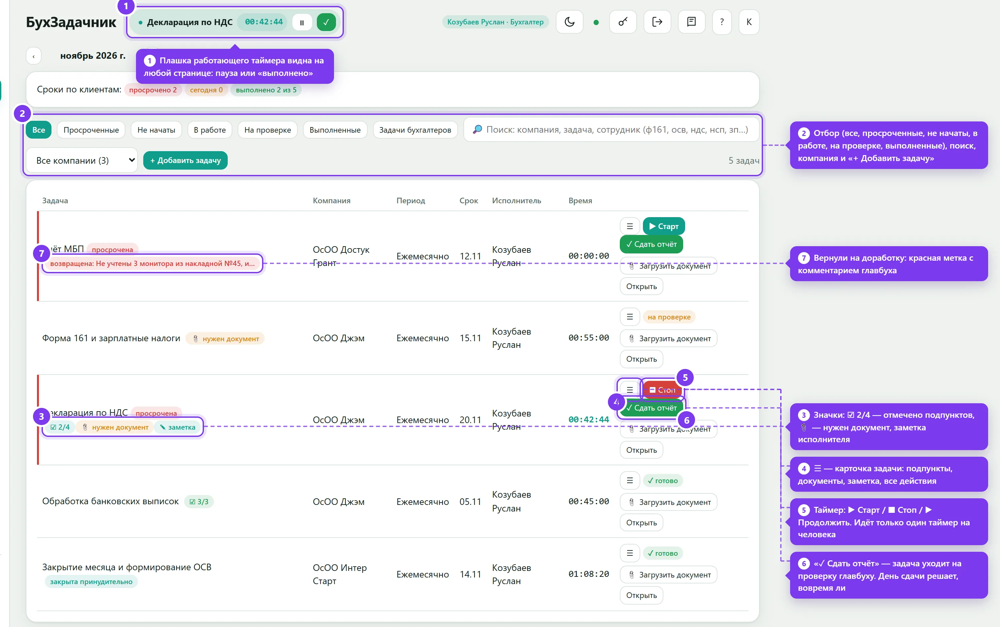
- Плашка таймера видна на любой странице: пауза или «выполнено» в одно нажатие.
- Отбор и поиск. Все, просроченные, не начаты, в работе, на проверке, выполненные; поиск по задаче, клиенту и сотруднику; выбор компании; «+ Добавить задачу» — своя или из каталога.
- Значки задачи. ☑ 2/4 — отмечено подпунктов из всех, «нужен документ», «заметка» исполнителя. Красная полоса слева — задача просрочена.
- ☰ — карточка задачи: подпункты, документы, заметка, все действия. Двойной щелчок по строке делает то же.
- Таймер: ▶ Старт, ■ Стоп, ▶ Продолжить. У человека идёт только один таймер: запустили другую задачу — эта встанет на паузу.
- «✓ Сдать отчёт». Задача уходит главбуху на проверку. По дню сдачи решается, сдано ли вовремя.
- Возвращена на доработку. Красная метка с комментарием главбуха: что исправить. Исчезнет, когда задачу сдадут снова.
Таймер
Кнопка «▶ Старт» запускает таймер, «■ Стоп» ставит на паузу, «▶ Продолжить» продолжает с того же места. Время копится в задаче.
- У одного сотрудника идёт только один таймер. Запустили новую задачу, прежняя сама встала на паузу.
- Пока таймер идёт, вверху любой страницы видна плашка: какая задача, сколько времени, кнопки «Пауза» и «Выполнено».
- Таймер считает от момента запуска. Закрытая вкладка его не останавливает: не забывайте ставить паузу.
Сдача и приёмка
- Бухгалтер нажимает «✓ Сдать отчёт». Задача уходит «на проверку». День сдачи записывается, и по нему же решается, сдано ли вовремя.
- Главбух или руководитель принимает задачу. Программа спрашивает дважды, потому что принятый отчёт сразу уходит в автоаудит.
- Свою задачу главбух и руководитель закрывают сразу, без проверки.
- Принятую задачу можно вернуть кнопкой «↩ Отменить приёмку»: она снова станет «на проверке», а её суммы уйдут из автоаудита.
Вернуть на доработку
«Вернуть» требует комментарий: что исправить. Исполнитель видит его в задаче жёлтой плашкой, пока не сдаст снова.
Подпункты
Если у задачи есть подпункты, закрыть её можно только когда отмечены все. Бухгалтер отмечает подпункты в своей задаче, но не может их переименовать, убрать или добавить: это настраивается в смете.
Обязательный документ
Если у процесса стоит «Документ обязателен», задачу не закрыть, пока к ней не приложен файл (кнопка 📎). Руководитель или главбух может снять требование кнопкой «Документ не нужен».
Документы: до 50 МБ каждый, не больше 30 на задачу. Форматы: PDF, Word, Excel, CSV, картинки, архивы, XML. В закрытую задачу бухгалтер файл уже не загрузит.
Закрыть принудительно
Руководитель или главбух может закрыть задачу без документа и подпунктов, но только с причиной. Причина видна в задаче и записывается в журнал.
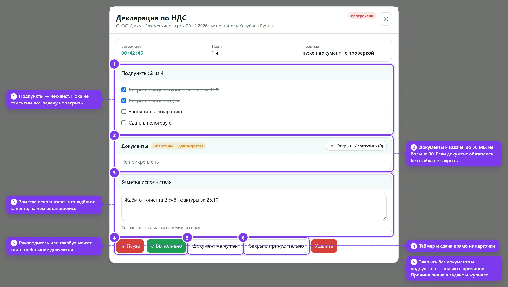
- Подпункты — чек-лист. Пока не отмечены все, задачу не закрыть. Названия подпунктов бухгалтер не меняет.
- Документы. До 50 МБ каждый, не больше 30 к задаче. Метка «обязательны для закрытия» — без файла задачу не закрыть.
- Заметка исполнителя: что ждём от клиента, на чём остановились. Сохраняется, когда выходите из поля.
- Таймер и сдача прямо из карточки.
- «Документ не нужен». Руководитель или главбух снимает требование документа, если его не будет.
- «Закрыть принудительно». Без документа и подпунктов, только с причиной. Причина видна в задаче и записывается в журнал.
Новая задача и поручения
«+ Добавить задачу» открывает форму:
- Своя задача: название, срок, клиент, исполнитель, «документ обязателен», «с проверкой».
- Из каталога: подставляет подпункты и правила процесса.
- По сотрудникам (одна задача выбранным людям) или по компаниям (каждой выбранной компании её исполнителю). Компании без исполнителя программа покажет списком: им задача не создалась.
Вкладки «Я поручил» и «Поручено мне» показывают поручения. Своё поручение можно отозвать кнопкой «Отозвать», пока его не начали.
Частые вопросы
- Не закрывается задача.
- Программа скажет причину: не отмечены подпункты или нет обязательного документа. Карточка задачи откроется сама.
- Таймер встал на паузу сам.
- Вы запустили другую задачу. В работе может быть только одна.
- Задача «на проверке» висит долго.
- Её ждёт главбух клиента. Проверьте, назначен ли главбух в карточке клиента.
- Как понять, сдано ли вовремя?
- Сравнивается день сдачи бухгалтером со сроком задачи. Сколько главбух проверял, не важно.
Мой кабинет и Чеклист
Разделы для сотрудника после входа: где посмотреть свои цифры и не пропустить срок.
Мой кабинет
- Плитки: «Мои задачи», «Выполнено», «Вовремя» (процент), «Просрочено», «На проверке», «Моё время».
- Списки: задачи на сегодня, новые поручения за последние три дня, просроченные.
- У главбуха ещё список задач бухгалтеров, которые ждут его проверки.
Процент вовремя = задачи, сданные не позже срока ÷ все выполненные задачи. Если выполненных ещё нет, показано 100%.
Чеклист
Все незакрытые задачи со сроком на ближайшие три дня (и просроченные), сгруппированные по клиентам. Галочка в строке сдаёт задачу так же, как кнопка в задачнике. Если таких задач нет, вы увидите «На ближайшие дни всё сделано ✓».
Мои клиенты
Клиенты, по которым у вас есть задачи: ИНН, режим, тариф, сколько ваших задач и сколько часов на них ушло.
Руководитель
Страница руководителя показывает всю фирму за выбранный месяц, без обхода задач по одной.
Что на странице
- Месяц выбирается стрелками.
- По сотрудникам: щелчок по строке раскрывает компании этого человека.
- По компаниям: подсвечены клиенты, у которых нет задач на будущее. Значит, им не создали задачи из сметы.
- «Просрочено сейчас» считается по всем месяцам, а не только по выбранному.
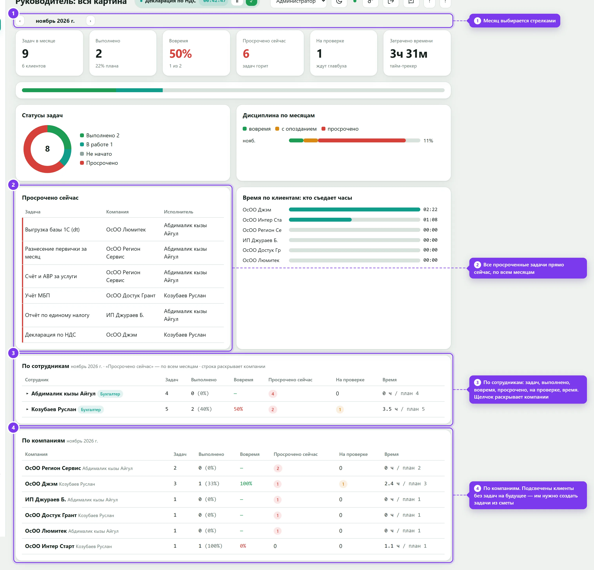
- Месяц выбирается стрелками. Плитки ниже: задач в месяце, выполнено, вовремя, просрочено сейчас, на проверке, затрачено времени.
- Просрочено сейчас — все незакрытые задачи с прошедшим сроком, по всем месяцам.
- По сотрудникам: задач, выполнено, вовремя, просрочено, на проверке, время против плана. Щелчок по строке раскрывает компании этого человека.
- По компаниям. То же по каждому клиенту. Подсвеченные клиенты не имеют задач на будущее — им нужно создать задачи из сметы.
Частые вопросы
- Клиент подсвечен «нет задач на будущее».
- Откройте его смету и нажмите «Сохранить и создать задачи».
Аудит качества
Ручная проверка работы по одному клиенту за период: смотрите каждую закрытую задачу, ставите вердикт и проходите чек-лист.
Список аудитов
В таблице клиент, период, аудитор, статус, сколько задач проверено, замечания по степени, прогресс чек-листа и дата обновления. Раздел есть только у руководителя.
Аудит можно удалить. Вместе с ним удаляются незакрытые задачи-исправления по его замечаниям.
Новый аудит
Выберите клиента и период: прошлый или текущий квартал, полугодие, год, прошлый год или свои даты.
Страница аудита
- Задачи клиента, закрытые в периоде, сгруппированы по сферам.
- Вердикт: Норма или Замечание. У замечания есть степень (критично, существенно, незначительно) и обязательное описание. Вердикт можно снять.
- Чек-лист из стандарта по разделам. Можно добавить свои пункты, переименовать или удалить раздел.
- «Завершить аудит» предупреждает, если что-то не проверено. После завершения правка закрыта. «Вернуть в работу» открывает её снова.
Замечания
Вкладки: активные, не переданы, на проверке, просрочены, устранены, все.
«Передать исполнителю» (одно или все сразу) создаёт задачу-исправление с проверкой. Срок зависит от степени:
| Степень | Срок на исправление |
|---|---|
| Критично | 2 дня |
| Существенно | 5 дней |
| Незначительно | 10 дней |
Когда задачу-исправление выполнили и приняли, замечание само становится «Устранено».
Стандарт чек-листа
По умолчанию 12 пунктов. Правится строками «Раздел | Пункт». Кнопка «Вернуть стандартный» возвращает исходный список.
Автоаудит
Автоаудит сам читает Excel-отчёты, которые бухгалтеры приложили к задачам, и сверяет суммы. Например, начисленная зарплата в оборотно-сальдовой ведомости должна совпасть с суммой в Форме 161. Человеку на такую сверку по всем клиентам ушёл бы не один день.
Кто видит
Страница есть только у руководителя. Бухгалтер получает вопросы по расхождениям как задачи в своём задачнике.
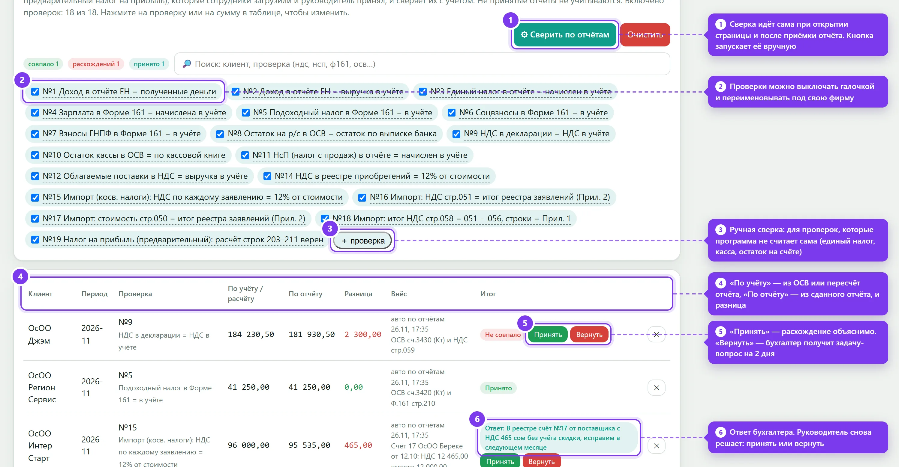
- «⚙ Сверить по отчётам». Сверка и так идёт сама при открытии страницы и после приёмки отчёта. Кнопка запускает её вручную. «Очистить» убирает все строки.
- Проверки. Каждую можно выключить галочкой или переименовать, нажав на название.
- «＋ проверка» — ручная сверка для того, что программа не считает сама: единый налог, касса, остаток на счёте.
- Колонки. «По учёту / расчёту» — из ОСВ или пересчёт самого отчёта, «По отчёту» — из сданного отчёта, «Разница», кто внёс, итог.
- «Принять» или «Вернуть». Принять — расхождение объяснимо. Вернуть — бухгалтер получит задачу-вопрос со сроком 2 дня.
- Ответ бухгалтера. Появляется в строке. Руководитель снова решает: принять или вернуть.
Какие отчёты программа читает
Оборотно-сальдовая ведомость (ОСВ), декларация по НДС с реестром приобретений, налог с продаж (НсП), Форма 161, отчёт по косвенным налогам при импорте из ЕАЭС (STI-123, .xlsx) и предварительная сумма налога на прибыль (STI-107, .xls).
Период берётся из самого документа, а не из задачи. Отчёт за июль, сданный в августе, стоит в июле. Для налога на прибыль берётся конец периода.
Что сверяется
| № | Проверка | Как |
|---|---|---|
| 4 | Зарплата в Форме 161 = начислена в учёте | ОСВ сч. 3520, оборот Кт ↔ Ф.161 графа 204 |
| 5 | Подоходный налог в Форме 161 = в учёте | ОСВ сч. 3420 ↔ Ф.161 графа 210 |
| 6 | Соцвзносы в Форме 161 = в учёте | ОСВ сч. 3531–3533 ↔ Ф.161 графа 213 |
| 7 | Взносы ГНПФ в Форме 161 = в учёте | ОСВ сч. 3534 ↔ Ф.161 графа 214 |
| 9 | НДС в декларации = НДС в учёте | ОСВ сч. 3430 ↔ НДС строка 059 |
| 11 | НсП в отчёте = начислен в учёте | ОСВ сч. 3480 ↔ НсП строка 131 |
| 12 | Облагаемые поставки в НДС = выручка в учёте | ОСВ сч. 6110 ↔ НДС строка 050 |
| 14 | НДС в реестре приобретений = 12% от стоимости | Каждый счёт реестра; ошибочные перечислены |
| 15 | Импорт: НДС по каждому заявлению = 12% | Приложение 2, каждое заявление; находит и скопированные суммы |
| 16 | Импорт: НДС стр. 051 = итог Приложения 2 | Сумма графы «Сумма НДС» |
| 17 | Импорт: стоимость стр. 050 = итог Приложения 2 | Сумма графы стоимости |
| 18 | Импорт: стр. 058 = 051 − 056, строки = Приложение 1 | Арифметика отчёта |
| 19 | Налог на прибыль: расчёт строк 203–211 | 205 = 203 − 204, 207 = 205 × ставка, 210 = 207 − 208 − 209, 211 = 210 |
Проверки №1–3, 8 и 10 (единый налог, остаток на счёте, касса) вводятся вручную: кнопка «+ Сверка», суммы по ОСВ и по отчёту, разницу программа считает сама.
Совпадением считается разница меньше половины тыйына, то есть суммы должны совпасть до тыйына. Каждую проверку можно выключить галочкой и переименовать под свою фирму.
Защита от чужих файлов
- ОСВ другой организации не относится к клиенту: программа пишет, чья она.
- Отчёт с чужим ИНН в сверку не берётся.
- Если у клиента ИНН не записан, а отчёт подан на ИНН, который ни у кого больше не стоит, программа заполнит ИНН клиента из отчёта и запишет это в журнал.
- Задачи «на проверке» ещё не учитываются: они перечислены отдельно «ждут приёмки».
Когда идёт сверка
Каждый раз, когда руководитель открывает страницу автоаудита, и после приёмки отчёта. Кнопка «⚙ Сверить по отчётам» запускает сверку вручную.
Расхождение: принять или вернуть
- Принять: расхождение объяснимо, строка становится «Принято».
- Вернуть: бухгалтер получает задачу «Вопрос аудита №…: объясните расхождение» со сроком два дня. Он отвечает текстом («Отправить руководителю»), ответ появляется в строке, и руководитель снова решает: принять или вернуть.
Если суммы в документах поменялись (заменили файл), строка пересчитывается, и прежний ответ снимается.
Где ошибка в файле
У строки с расхождением есть кнопка «📍 Где ошибка». Программа покажет лист, строку и ячейку, откуда взята каждая сумма, и может скачать копию Excel-файла с подсвеченными ячейками.
Частые вопросы
- Отчёт приложен, а сверки нет.
- Проверьте: задача принята (не «на проверке»), файл в формате Excel, а не скан или PDF, и за тот же месяц есть ОСВ клиента. Сверять одну сторону не с чем.
- Пишет «ОСВ другой организации».
- Название организации в шапке ведомости не похоже на название клиента. Скорее всего, приложили файл другого клиента.
- Почему проверки №1–3 не считаются сами?
- Отчёт по единому налогу программа пока не читает. Суммы по нему вводятся вручную.
Журнал
Журнал записывает важные действия: кто изменил карточку клиента, принял или отменил приёмку, закрыл задачу принудительно, уволил сотрудника, включил сейф и так далее. У каждой записи время и автор.
Сверху поиск по тексту записей. При входе загружаются последние 300 записей, новые дописываются по ходу работы. Кнопок «изменить» и «удалить» у записей журнала нет.
Бизнес-процессы
Инструкция по экрану «Настройки → Бизнес-процессы». Каталог это список работ, которые ваша фирма делает клиентам. Он один на всю фирму. Из каталога собираются сметы, а из смет задачи, поэтому почти каждое поле процесса где-то отзовётся.
Экран каталога
Одна строка это один процесс: сфера и группа, периодичность и срок, план в минутах, правило закрытия, биллинг, цена, для кого. Сверху поиск и фильтр по сфере. Кнопки: «+ Добавить процесс», «Загрузить стандартный каталог», карандаш (изменить), крестик (удалить).
Поля карточки процесса
| Поле | Что значит |
|---|---|
| Название | Видно везде: в каталоге, смете, задаче. Обязательно |
| Описание | Короткая инструкция. Исполнитель читает её в карточке задачи |
| Сфера и группа | Для порядка: группируют смету и работают фильтром. На подбор не влияют |
| Категория | «Разовая/заявка» и «Индивидуальная» в смету сами не включаются |
| Периодичность | Ежемесячно, ежеквартально, раз в полгода, ежегодно, разово, по событию, по запросу |
| Срок (число) и месяцы сдачи | К какому числу и в какие месяцы. Для ежемесячных месяцы не нужны |
| План, минут | Оценка трудоёмкости. Сравнивается с временем по таймеру |
| Документ обязателен | Задачу не закрыть без файла |
| Проверка | Задача бухгалтера уходит на приёмку главбуху |
| Биллинг, цена, количество | Как считается цена строки сметы, см. БухСмета |
| По филиалам | Работа делается по каждому налоговому органу клиента |
| Режимы НО | При каких системах налогообложения процесс нужен. Пусто значит всем |
| Характеристики-условия | Предлагать только клиентам с этими характеристиками |
| Подпункты | Части работы. В задаче становятся чек-листом |
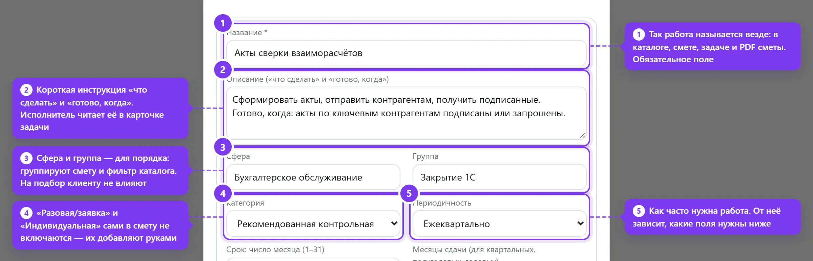
- Название — так работа называется везде: в каталоге, смете, задаче и PDF сметы. Обязательное поле.
- Описание — короткая инструкция «что сделать» и «готово, когда». Исполнитель читает её в карточке задачи.
- Сфера и группа — для порядка: группируют смету и фильтр каталога. На подбор клиенту не влияют.
- Категория. «Разовая/заявка» и «Индивидуальная» сами в смету не включаются — их добавляют руками.
- Периодичность — как часто нужна работа. От неё зависит, какие поля нужны ниже.
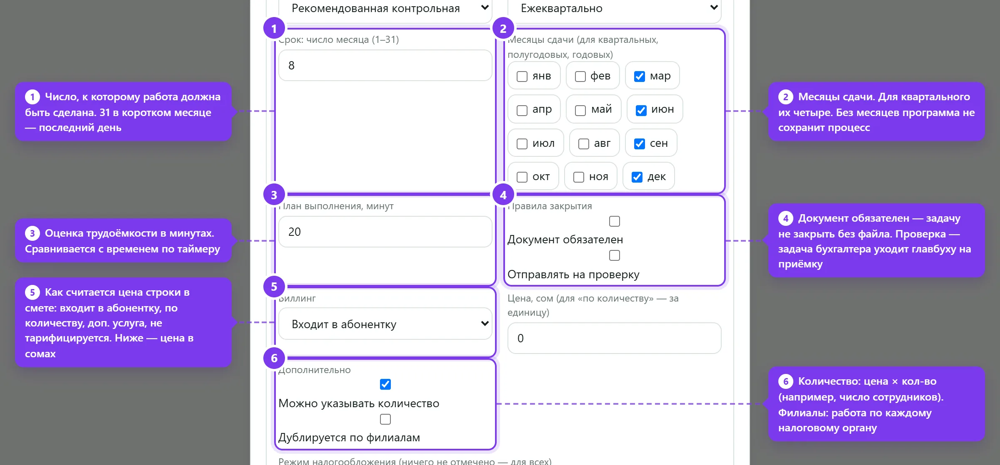
- Срок — число месяца, к которому работа должна быть сделана. Если в месяце нет такого числа, срок — последний день месяца.
- Месяцы сдачи. Для квартального их четыре, для годового один. Без месяцев программа не сохранит квартальный, полугодовой или годовой процесс.
- План в минутах — оценка трудоёмкости. Сравнивается с временем по таймеру.
- Правила закрытия. «Документ обязателен» — задачу не закрыть без файла. «Отправлять на проверку» — задача бухгалтера уходит главбуху на приёмку.
- Биллинг — как считается цена строки в смете: входит в абонентку, по количеству, доп. услуга, не тарифицируется. Рядом — цена в сомах.
- Дополнительно. «Можно указывать количество» — цена × кол-во (например, число сотрудников). «Дублируется по филиалам» — работа по каждому налоговому органу клиента.
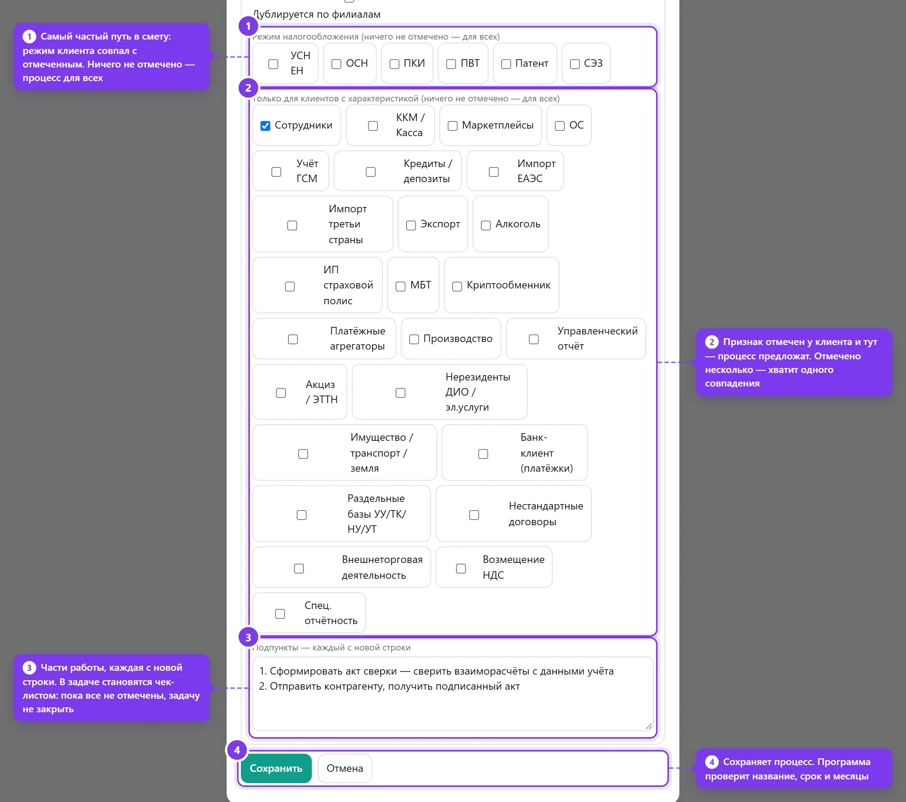
- Режим налогообложения — самый частый путь в смету: режим клиента совпал с отмеченным. Ничего не отмечено — процесс для всех.
- Характеристики. Признак отмечен у клиента и тут — процесс предложат. Отмечено несколько — хватит одного совпадения. Ничего не отмечено — для всех.
- Подпункты — части работы, каждая с новой строки. В задаче становятся чек-листом: пока все не отмечены, задачу не закрыть.
- Сохранить. Программа проверит название, число срока (1–31) и месяцы сдачи.
Проверки при сохранении
Программа не даст сохранить процесс без названия, с числом срока вне 1–31 или без месяцев сдачи у квартальных и годовых работ. Иначе процесс не дал бы ни одной задачи.
Частые вопросы
- Процесс не предлагается клиенту.
- Проверьте режимы НО и характеристики-условия процесса и сравните с карточкой клиента. Ещё у нулевого клиента предлагаются только налоги, отчёты и контроль.
- По процессу нет задач.
- У процесса нет срока или месяцев сдачи, либо в смете строка выключена, либо задачи из сметы ещё не создавали.
- Поправил процесс, у клиента ничего не изменилось.
- Каталог влияет на смету при следующем открытии. Уже созданные задачи не меняются.
Настройки и данные
Раздел «Настройки» есть только у руководителя. Здесь профиль компании, справочники, каталог работ и выгрузки данных.
Профиль компании
Название, юридическое название, ИНН (14 цифр), телефон, email, адрес, руководитель, банк, расчётный счёт (16 цифр), БИК (6 цифр). Реквизиты печатаются в шапке смет.
Справочники
- Режимы налогообложения, тарифы, виды деятельности: значения для карточки клиента.
- Справочник ставок: название, единица, цена, условия. Цена не может быть меньше нуля.
- Сферы и группы берутся из каталога. Переименование меняет их во всех процессах сразу.
- Коды налоговых органов: 61 код, только просмотр и поиск.
Данные и резервные копии
- Excel (.xlsx): задачи, клиенты и сотрудники одной книгой.
- Задачи в CSV: защищено от формул, файл можно спокойно открыть в Excel.
- Скачать базу (.esa): зашифрованная копия всех данных под паролем (от 8 знаков), который вы задаёте при скачивании. Без пароля файл не открыть.
- Загрузить базу из файла: восстановление из копии .esa.
Сейф паролей
Сейф шифрует пароли клиентов прямо в браузере руководителя. На сервер уходит только шифр, поэтому ни сервер, ни сотрудники паролей не видят.
Что шифруется
Пароль ИТС, пароль ЭЦП, пароль Тундук ЕСИ, пароли интернет-банкинга и поле «Доступы / инструкции». Логины не шифруются.
Как включить
- Настройки → «Сейф паролей клиентов» → «Включить сейф».
- Придумайте пароль сейфа: не короче 8 знаков, не совпадает с логином. Введите дважды.
- Программа зашифрует все пароли во всех карточках и в корзине удалённых и скажет, сколько их было.
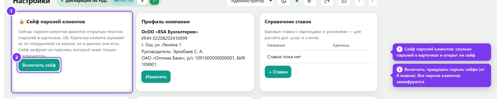
- Карточка сейфа: включён ли сейф, открыт ли сейчас, сколько паролей в карточках клиентов и сколько из них ещё не зашифровано.
- «Включить сейф»: придумать пароль сейфа (от 8 знаков) и повторить его. Все пароли клиентов сразу зашифруются.
Работа с сейфом
- Открыть сейф: в настройках или кнопкой «🔒 Открыть сейф» в карточке клиента. Пока сейф закрыт, вместо паролей написано «🔒 в сейфе».
- Править разделы с паролями можно только при открытом сейфе. Новые пароли шифруются при сохранении.
- Закрыть сейф: пароли снова скрыты до следующего открытия.
- Сменить пароль сейфа: нужен текущий пароль. Все пароли перешифровываются новым.
- Зашифровать открытые: если кто-то внёс пароль старой версией программы, он остался открытым. Кнопка дошифрует такие пароли.
- Выключить сейф: все пароли расшифровываются и снова хранятся открытым текстом.
Если что-то пошло не так (неверный пароль, пропала связь), программа ничего не меняет и пишет «Ничего не изменено».
Частые вопросы
- Забыл пароль сейфа.
- Восстановить нельзя. Пароли клиентов придётся заново узнать у клиентов и ввести после выключения и повторного включения сейфа.
- Пароль показывает «🔒 в сейфе», хотя сейф открыт.
- Пароль зашифрован другим паролем сейфа или повреждён. В настройках это видно как «не расшифровываются: N».
- Бухгалтер видит пароли?
- При включённом сейфе нет: у него только шифр, а пароля сейфа у него нет.